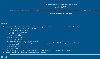
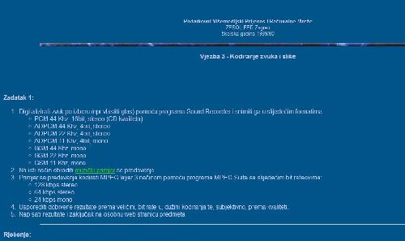
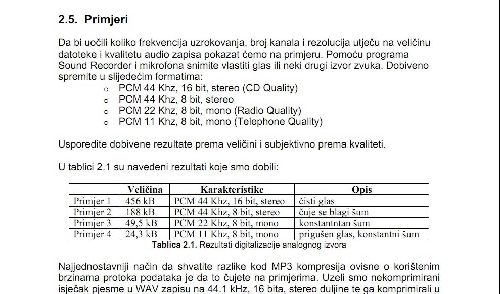
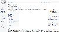
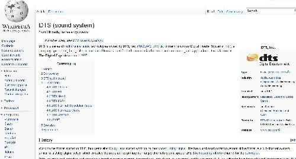
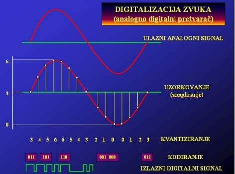

Pocetna
Literatura
Primjeri
Slične Stranice:





Digitalizacija glazbe
Primjer prvi
Glazba .wav 705kbps original
Glazba PCM 8kHz uzorkovanja, 8 bita protoka
Glazba PCM 8kHz uzorkovanja, 16 bita protoka
Glazba MPEG 8kHz uzorkovanja, 16 bita protoka
Glazba GSM 8kHz uzorkovanja, 2 bita protoka
Glazba ADPCM 8kHz uzorkovanja, 4 bita protoka
Glazba Alaw 8kHz uzorkovanja, 8 bita protoka
Primjer drugi

Digitalizacija zvuka
3 koraka:
Uzorkovanje
Kvantiziranje
Kodiranje
DTS
Digital Theater Systems
Link na službenu web stranicu kolegija
Multimedijska tehnika
kolegiju možete pristupiti putem moodle-a
ovdje